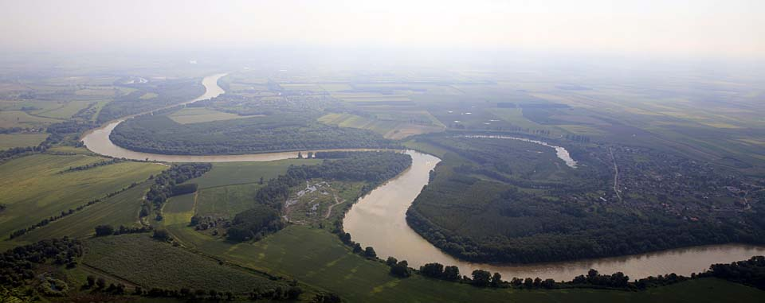
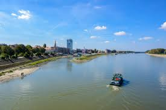
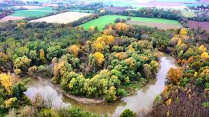
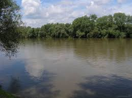

Duna
Európa egyik legnagyobb folyója, amely Magyarországot és fővárosát, Budapestet is átszeli. Fontos közlekedési útvonal és ivóvízforrás.

Tisza
Az ország második leghosszabb folyója, amely a keleti területeken halad keresztül. Híres az árvizeiről és a Tisza-tóról.
Dráva
Délnyugat-Magyarország határfolyója, amely természetvédelmi szempontból is jelentős, mivel gazdag élővilággal
Rába
A Dunántúlon található, és a Dunába torkollik. Győr térségében fontos szerepet játszik az energiatermelésben és az iparban.
Szamos
Erdélyből érkező folyó, amely a Tiszába ömlik. Fontos szerepet tölt be az alföldi területek vízgazdálkodásában.
